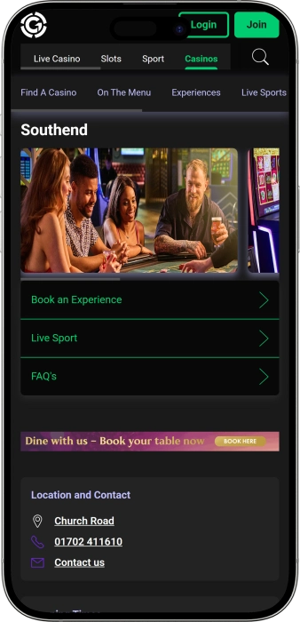

Exclusive welcome offer of
Exclusive welcome bonus of
Grosvenor Casino Southend — games, poker, bar and nights out
Top Casinos
Bonus Details
Casino
Bonuses
Rate
Free Spins
More Info
Get
Advantages
-
Wide choice of slots and E-Tables.
-
Live tables with strong winning potential.
-
Poker with jackpots and prizes.
-
Game promos and bonus offers.
-
Weekend 24-hour opening for play.
-
Live sport screens boost the vibe.
-
Restaurant and bar for downtime.
- The main strengths are the flexible opening hours, a varied gaming floor, and a “night out” feel where games, food and live sport sit together naturally. Clear house rules and a well-organised layout make it easy to settle in quickly. It works for both quick visits and longer evenings.
Grosvenor Casino Southend App


About Grosvenor Casino Southend
It stands out by blending poker, live tables and electronic gaming in one venue. Live sport coverage and late opening hours add to the overall experience.
- Poker jackpot: from £10,000.
- Slots bonus: up to £20.
- Poker rakeback: up to 34%.
Grosvenor Casino Southend is a modern venue built for both gaming and a relaxed night out by the seafront. The atmosphere feels lively yet comfortable, making it easy to stay for hours.
The layout is designed for smooth switching between slots, tables and other areas. The poker space caters to newcomers as well as regular players. Live sport is often on, keeping the bar area buzzing. Staff are typically quick to help with membership, basic rules and finding the right game. Evenings bring a more late-night feel without being overly hectic. Safety and clear house standards are a visible priority. Food options work for a quick bite or a proper meal. Overall, it’s a place that blends casino action, dining and entertainment under one roof.
The atmosphere, service and leisure format at Grosvenor Casino Southend
This casino leans into a modern, city-style look: clean lighting, tidy lines, plenty of space and a layout that feels easy to navigate. The mood strikes a balance between excitement and comfort — you can play intensely, or simply watch, chat and unwind. Noise is usually kept manageable because areas tend to be arranged so they don’t clash. In the evening the energy lifts naturally, with more guests, more momentum around the tables, and a busier bar scene.
Opening hours suit different plans: Monday to Thursday it runs from 10:00 until 05:00, and from Friday to Sunday it’s open 24 hours. That schedule works well for late sessions or post-dinner drop-ins. The late-night vibe feels consistent, with lighting, music and service staying steady deep into the night. It becomes the sort of place you can visit spontaneously without reshaping your whole evening around a closing time.
The bar offering typically focuses on dependable favourites: drinks that pair well with play, cocktails, soft options and easy snacks. The bar area often acts as the social hub — people discuss poker hands, match results and plans for the night. Live sport screens are a key part of the feel, keeping the venue tied to what’s happening in real time. That’s why many guests come not only for gaming, but for the shared buzz and social atmosphere.
The restaurant side usually feels like a genuine reason to visit in its own right, rather than a quick bite stop. Guests often look for clear menus, comfortable seating and a space where conversation is easy. A popular approach is “meal first, games after”, turning the night into a rounded experience rather than a single-purpose trip. For a more occasion-style visit, table bookings and group seating are commonly available options.
There isn’t typically an on-site hotel, but nearby accommodation is easy to find across a range of comfort levels. That helps guests who plan to stay overnight or build a full weekend around the visit. The casino fits neatly into a broader leisure route where there’s plenty to do before and after playing. The result is a night that feels full, but not rushed.
Promotions and membership benefits add extra value to the overall experience. Welcome-style offers for slot play are commonly seen, alongside targeted deals for returning guests. Poker players may also find additional reward mechanics tied to activity in cash games or tournaments. Overall, it’s positioned not as a one-off stop, but as a venue that encourages repeat visits with ongoing extras.
Staff, payment and receipt of winnings at Grosvenor Casino Southend
Staff typically operate with a “quick and clear” approach: a welcome at the entrance, help with membership, guidance on areas and house rules. Dealers keep the pace moving at the tables and ensure bets are handled correctly, while floor managers help with queries and any disputes. In the poker area, you can usually get help with waiting lists, tournament formats and table etiquette. Bar and restaurant service is generally built to keep the night flowing rather than rushing guests.
English is the main language, and in busy leisure spots it’s common to find team members who can communicate basic points in other widely used languages. For poker and table games, staff tend to explain betting flow and procedures in a straightforward, calm way. That’s particularly helpful for first-time visitors, where clarity removes unnecessary pressure. Responsible play questions are also usually welcomed, with staff pointing you towards support tools and limits.
Most in-venue transactions are handled in pounds sterling, with cage operations running smoothly when you have valid ID. Topping up your playing budget is typically possible via cash and bank card options, and sometimes through a single wallet/member account if you’ve set one up. Certain limits or checks may apply, which is standard practice for financial security. Keeping receipts and confirmations is a sensible habit, especially if you plan to exchange larger amounts.
Payment methods in venues like this commonly include debit cards and cash, while credit transactions may be restricted under responsible gambling rules. Membership systems can add convenience, making cage transactions quicker and spending easier to track. Cash machines are often available on-site or nearby, though fees depend on your bank. Dedicated currency exchange may be limited, so arriving with the right currency is typically the smoothest option.
Collecting winnings in a land-based casino is usually done at the cage: you exchange chips for cash, or use an available cashless option if the venue’s rules allow it. For larger sums, ID checks and source-of-funds questions can apply — a normal compliance step. Poker payouts follow similar principles, and jackpots or promotions may involve extra verification and paperwork. For tournament prizes, you may receive documentation that helps with transparency and security.
On tax, the situation for players is generally straightforward: gambling winnings for individuals are typically not subject to income tax, while the operator handles its own duties under local regulation. Personal circumstances can vary, especially for complex tax statuses or professional activity. If you play high limits or receive substantial sums regularly, keeping a clear record of transactions is wise and professional advice can help. The venue’s internal processes are designed to keep payouts transparent and compliant.
Visiting rules and useful tips before visiting Grosvenor Casino Southend
Before you visit, it helps to know the core house rules so entry and your night run smoothly. The venue operates with an age restriction, and first-time visitors are usually asked for photo ID. Free membership/registration is commonly required to play and is typically completed on arrival in a few minutes. The dress code is usually smart casual, meaning neat everyday attire rather than sporty or overly relaxed outfits. Respectful behaviour is expected at all times: don’t disrupt games, argue with dealers, or create conflict. Photographing table play or other guests without permission is generally not allowed, and any behaviour that resembles cheating is taken seriously. If someone appears heavily intoxicated, entry or service may be refused. Responsible gambling tools and limits are part of the environment and are best seen as support rather than red tape. Keep in mind weekday and weekend opening differs, and late evenings can be busier. If you’re coming in a group, agree a budget and plan so it stays fun. Bringing your preferred payment method and keeping receipts for larger transactions is a sensible habit.
Dress code
- • Smart casual: neat clothing, closed shoes, tidy appearance.
- • Best to avoid tracksuits, beachwear, and overly casual “at-home” looks.
- • Evenings suit a slightly sharper outfit, especially for table play.
Entry requirements
- • 18+ and photo ID (checks can happen at any time).
- • Free membership/registration for gaming and offers.
- • House conduct standards apply; entry may be refused if rules are breached.
Prohibitions and restrictions
- • Photos/videos at tables or of guests without consent.
- • Any signs of unfair play, interference with dealing, coaching or signalling.
- • Aggression, disputes, heavy intoxication, or disorderly behaviour.
Parking and getting there
- • Plan travel ahead, especially at peak times and on weekends.
- • Parking options are often available nearby, alongside public transport and short walking routes from central points.
- • For late-night visits, plan a safe return route and a back-up transport option.
Loyalty program and membership at Grosvenor Casino Southend — levels, bonuses and privileges
The loyalty setup here centres on membership that makes visits smoother and can add extra value over time. It typically starts with free registration, unlocking offers, speeding up service, and helping regular guests get more from repeated visits. A key benefit is targeted promotions that may be sent to active members. For slots and electronic gaming, welcome-style bonuses are commonly used to ease you into a session. Table-game guests also benefit from simpler identification and cage processes once membership is in place. A separate layer applies to poker, where rewards can be tied to cash-game activity and paid fees. Poker loyalty often uses status levels and percentage cashback on rake, which matters most to frequent players. Benefits can include faster entry, quicker cage handling, and easier money management through a single wallet. Programmes usually include expiry rules for points and rewards, so using them in time is important. As with most schemes, details can be updated and the exact offers you receive depend on timing and activity.
Registration conditions
- • Free membership with identity verification (photo ID).
- • Simple sign-up form and acceptance of venue and bonus terms.
- • Option to enable a single wallet/account for smoother transactions (where available).
Tiers and how to reach them
- • Member (Base): granted on registration, gives access to core offers and services.
- • Silver: reached through regular visits and activity; often brings stronger targeted deals.
- • Gold: aimed at more active play; may include priority handling and enhanced offers.
- • Platinum: for the most regular guests; typically includes the most generous perks.
- • For poker, tiers are commonly measured via Status Points earned from rake/fees; a practical rule-of-thumb is around 10 Status Points per £1 in rake/fees (mechanics may vary by product and period).
Bonuses and perks
- • Slots welcome bonus: up to £20 — adds extra value for slot play (wagering rules and time limits depend on terms).
- • Fast-track entry — quicker entry for members, especially at busy times.
- • Single Wallet — convenient movement of funds across formats and easier access to cash in-venue.
- • Poker rakeback up to 34% (Platinum level) — returns a portion of rake for frequent cash-game play; higher tier usually means higher percentage.
- • Cash Points multiplier (e.g., 1.7 at higher status) — speeds up how quickly reward points accumulate (period rules apply).
- • Poker Cash Points expiry: 12 months — unused points may expire, so planning redemptions matters.
Software Providers
Entertainment and Gaming at Grosvenor Casino Southend
Bonuses, winnings and special offers at Grosvenor Casino Southend — promotions, jackpots and seasonal events
Beyond the core loyalty scheme, casinos often run separate offers tied to specific games and seasonal moments. The simplest example is a welcome-style gaming bonus that adds extra value when trying slots or electronic tables. Poker players tend to focus on jackpots and promo mechanics that create a “second way to win” alongside normal results. Time-limited campaigns may also appear around seasons, big sporting fixtures, or tournament series. During these windows you’re more likely to see prize draws, added prize pools, or improved entry pathways for certain events. Table-game themed nights can also show up, where activity on a featured game triggers small extras. Live sport coverage often becomes the backdrop for themed evenings that feel like part of the entertainment. Most promotions are time-boxed and come with participation rules, limits and validity periods. That’s why checking the current details on the night — with staff — is always sensible. Used as a bonus to a fun evening, promos can lift the overall experience. For regulars, seasonal events can noticeably increase the “upside of the night” through prizes and jackpots.
- • Slots welcome bonus: up to £20; Extra gaming credits/value to start slot sessions more comfortably. Usually time-limited and subject to participation terms.
- • Poker Bad Beat Jackpot: minimum £10,000; A jackpot triggered by rare, high-value hand scenarios under specific rules. The appeal is that multiple players can share in the payout, not just the pot winner.
- • Poker rake races/leaderboard races: prizes up to £15,000 (seasonal examples); In certain periods, cash-game activity can feed into a leaderboard where higher volume improves your chance of a prize.
- • Satellites to larger tournament series (format example); A route into higher-buy-in events via lower-cost qualifiers. The “win” is often a seat, ticket, or entry package.
- • Themed game weeks (mechanics example); Specific days may highlight slots, roulette, or poker with small participation extras. Figures vary by period, but often come as bonus credits or play value.
- • Guest prize draws (scenario example); Evening draws for guests playing during set hours or meeting a simple entry condition. Designed to add excitement without complicating the night.
Popular games at Grosvenor Casino Southend — from roulette to poker
The game mix is typically designed to suit different play styles: quick slot sessions, tactical table play, and deeper strategy in poker. Slots appeal through pace and variety, while electronic tables offer a table-like feel with an easier learning curve for newcomers. Live table games focus on familiar classics where discipline and good betting choices matter. Roulette remains a favourite because it’s easy to understand yet still delivers strong moments. Blackjack attracts those who want more control through decisions rather than pure chance. Side-by-side, faster poker-style table games such as Three Card Poker and Crazy 4 Poker are popular for their simple flow and clear outcomes. The poker room is its own world, driven by psychology, position and reading the table. Tournaments offer structure and competitive goals, while cash games offer flexibility. Newer players benefit from the fact that basic guidance on rules and etiquette is usually available. Overall, the games work for both short visits and long sessions.
- • Slots — fast play across many themes, bonus rounds and the chance of bigger hits within each machine’s mechanics.
- • E-Tables — terminal-based betting that still feels close to traditional table play.
- • Roulette — a classic with simple rules and a wide range of bets from cautious to high risk.
- • Blackjack — decision-driven play where solid strategy matters over time, with a lively pace.
- • Three Card Poker — quick, easy-to-learn poker-style table game with rapid hand outcomes.
- • Crazy 4 Poker — a punchier poker-variant table game with sharper payouts on certain hands.
- • Live Poker (cash games) — flexible format with blinds and the freedom to leave when it suits your session.
- • Poker Tournaments — structured play with blind levels and paid places, rewarding timing and patience.
Minimum and maximum bets at Grosvenor Casino Southend
Betting ranges in casinos typically vary by day, venue traffic, and the specific table or terminal. Evenings and weekends often bring higher-limit options, while daytime play can make it easier to find entry-level stakes. Electronic tables frequently allow smaller starting bets, while live tables provide a wider spread for different budgets and experience levels. Below are practical guide ranges to help you plan a session and understand the general scale.
| Game Type | Minimum Bet | Maximum Bet |
|---|---|---|
| Electronic Roulette (E-Roulette) | £1 | £100 |
| Live Roulette | £2 | £500 |
| Blackjack | £5 | £500 |
| Three Card Poker | £2 | £200 |
| Crazy 4 Poker | £2 | £200 |
| Slots | £0.10 | £5 |
| Poker cash games (blinds) | £0.25/£0.50 | £5/£10 |
| Poker tournaments (buy-in) | £20 | £250 |
Events, shows and entertainment at Grosvenor Casino Southend — evening format and regular program
The entertainment side is usually built around a consistent “night out” rhythm: gaming, the bar, live sport and poker-room activity. Rather than relying on a fixed stage show, the focus tends to be on the energy of the venue and the way each night can feel slightly different. Poker is the main driver of regular events — tournament days, cash-game action, themed series and promo races create a real sense of an events calendar. For groups, the social side matters just as much as the games, and the bar area delivers that lively late-evening buzz.
Live sport nights are especially noticeable because the atmosphere shifts: more emotion, more conversation, and more guests who come for the match as much as the play. Those evenings make it easy to combine watching a game with a short session on slots or tables. Sport often defines the busiest bar moments. If you enjoy a lively crowd, these nights tend to feel the most “on”.
Late hours can also bring a music-forward feel — stronger playlists, more atmospheric lighting and, on selected dates, a DJ-style vibe in the bar area. It’s not necessarily a full nightclub with a dedicated dancefloor, but the after-midnight mood is clear. That works well for guests who want nightlife energy without relocating or buying a separate club ticket.
Seasonal specials can include themed weeks, prize draws and poker series that add extra value and a more celebratory feel. For guests, it’s a chance to benefit from prizes, tournament entries, jackpot mechanics or simply a bigger night-out atmosphere. A simple planning approach works best: weekdays suit calmer play, while weekends and big-event nights deliver the strongest vibe.
- • Poker tournaments — structured competitive events with paid places and a focused atmosphere.
- • Poker cash games — regular blinds play with flexible participation time.
- • Promo races/rake races — seasonal poker activity with leaderboards and prizes.
- • Live sport nights — key fixtures on screens with a lively bar setting.
- • Themed gaming nights — dates that spotlight certain games alongside mini-promos.
- • DJ-style bar vibe (selected dates) — music-led late-night atmosphere.
- • Seasonal specials — themed décor, draws and limited-period offers during key seasons.
Bars, restaurant and relaxation at Grosvenor Casino Southend — how to spend an evening comfortably
A comfortable casino visit usually goes beyond gaming: the bar and restaurant areas let you layer your evening without rushing. Many guests start with dinner or a light bite, then move into slots, electronic tables or live games. That approach suits anyone who sees the venue as part of a wider leisure plan rather than a single-purpose stop. It also helps that you can shift pace easily — play for a while, then pause for a drink and conversation.
The bar area often acts as the social hub, where people chat about bets, share the night’s highlights and watch live sport on large screens. For groups, it keeps everyone connected even if not everyone is actively playing. Later on, the mood becomes more late-night, and the bar can feel like an alternative to moving on elsewhere. For many, that’s the key advantage — you don’t need to change locations to keep the evening going.
The restaurant space typically supports a calmer tempo: sit down, eat properly, and reset before returning to the floor. That break can be useful for maintaining control and avoiding impulsive decisions. For dates and small groups, dining adds a more occasion-like feel. If you’re planning a longer visit, the dinner-plus-gaming rhythm tends to feel the most balanced.
There’s usually no on-site hotel, but nearby accommodation is easy to find if you want to extend the night. That makes the venue convenient for weekend plans and short breaks, combining a walk, a meal, gaming and an overnight stay without complicated logistics. In that sense, it becomes part of a full leisure itinerary — where it’s not only about results, but about how enjoyable the night feels overall.
- • Bar — drinks, conversation and live sport in a lively setting.
- • Restaurant — a proper meal or relaxed bite before or after play.
- • Live sport viewing area — big screens and an event-night atmosphere.
- • Nearby hotels — practical overnight options close to the venue.
- • Seafront walk areas nearby — a great way to reset before or after gaming.
Frequently Asked Questions
Yes, many guests come for the bar, restaurant and live sport, as long as age and conduct rules are respected.
The dealer applies the game rules first, and a floor manager typically makes the final call based on house procedures.
Chips are normally exchanged at the cage via standard procedure, though larger amounts may trigger ID checks.
Yes, deposit/time limits and self-exclusion style tools are commonly available as part of responsible play support.